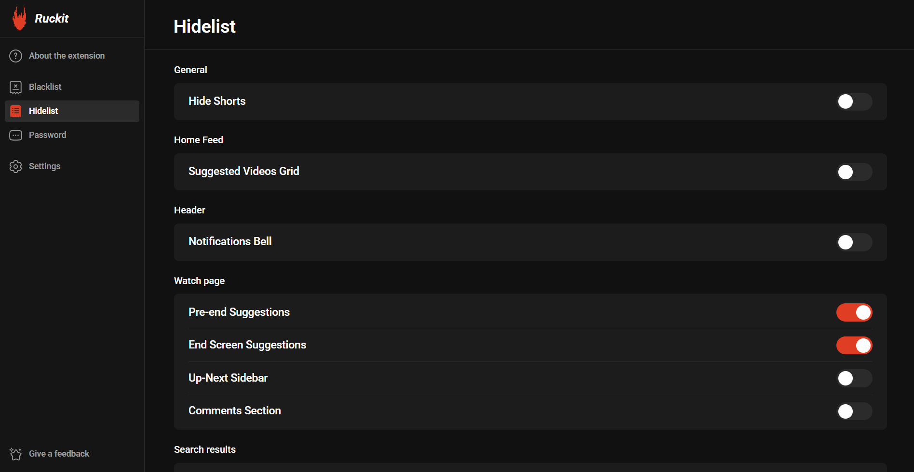
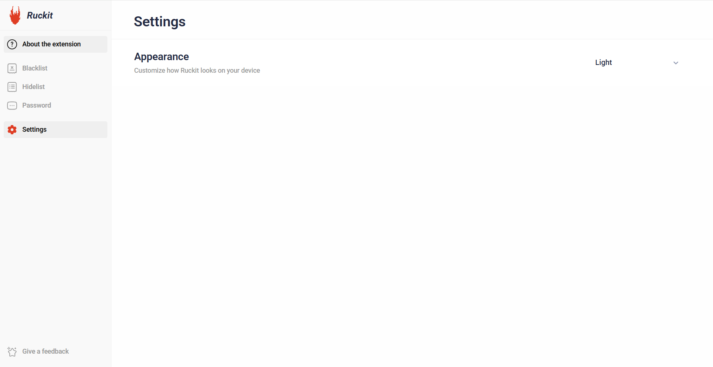

01
Clear your view.
Hide Shorts, suggestions, comments, and more. Give the video in front of you a little breathing room.
You came to YouTube for a reason.
Keep it that way.
Hide the distractions. Choose what stays. Make room for the videos you actually came to watch.
Available for Chrome & Microsoft Edge on desktop


A few simple controls to make YouTube work for you.
Hide Shorts, suggestions, comments, and more. Give the video in front of you a little breathing room.
Block unwanted channels, keywords, and phrases with your own blacklist. Decide what deserves your attention.
Customize your study or focus setup, then protect access to the extension and its settings with a password.
Bright and clean, or comfortably dark. Ruckit includes both light and dark themes, so you can choose the look that suits you.
Bring a little more intention to your everyday browsing.
If Ruckit helps you stay focused, consider supporting its development. Your contribution helps improve the extension and reach more people.